Forex Trading Platform
The Trading Platform project was for OANDA, a leading global financial services company specializing in forex (foreign exchange) and CFD (contract for difference) trading, data analytics, and comprehensive currency solutions for both businesses and individuals.
As the lead designer, I spearheaded the creation of an innovative platform that brings the full power and sophistication of a desktop trading experience to mobile devices and laptops. This design empowered traders to stay connected and make informed decisions, anytime and anywhere. With a user-friendly interface and real-time features, the platform was tailored to meet the needs of traders at all skill levels, helping them stay ahead in fast-moving markets.
My approach focused on ensuring that the platform not only facilitated better, risk-aware trading decisions but also provided seamless trade continuity—from single-screen smartphones to multi-screen desktop setups. This project was about more than just design; it was about delivering an experience that supports traders' ambitions, enhances their performance, and fosters trust in their ability to navigate complex markets confidently.
Behind the Scenes: Desktop
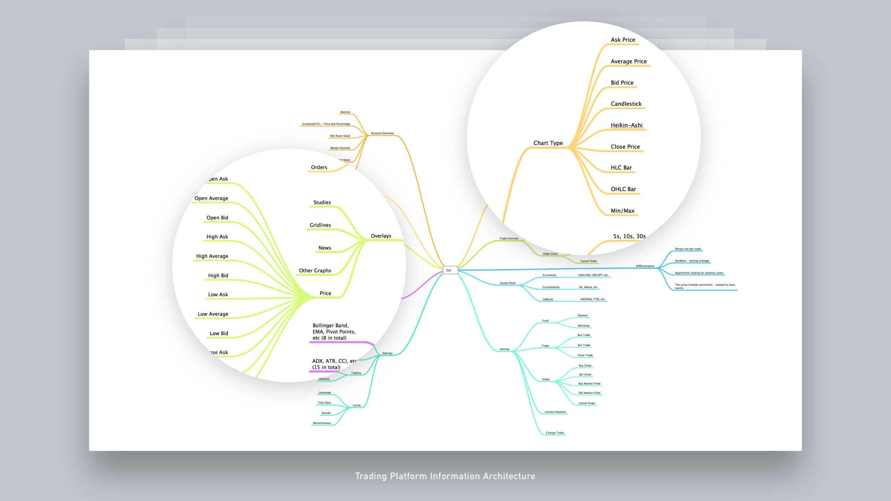
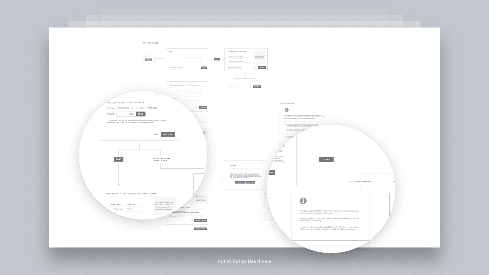
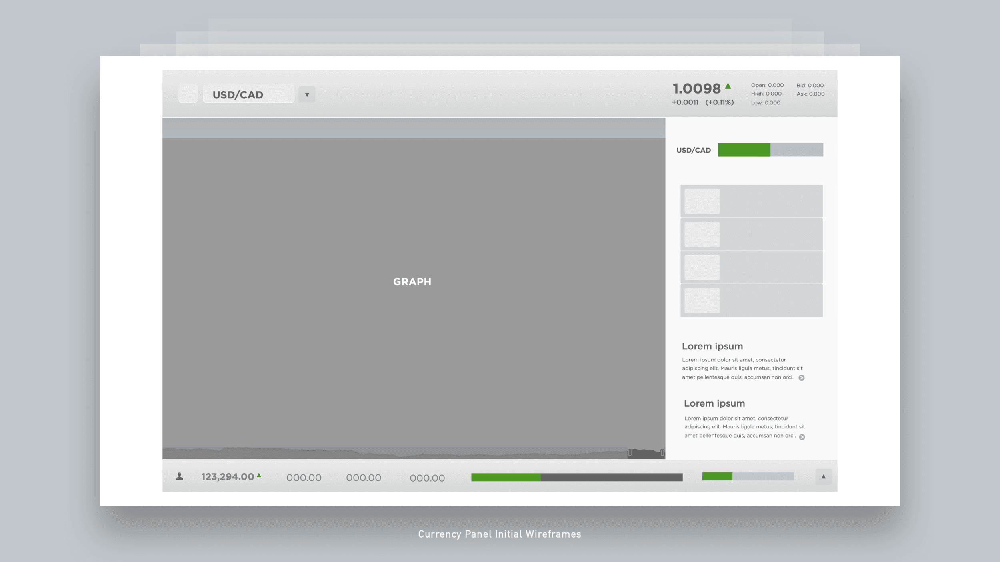
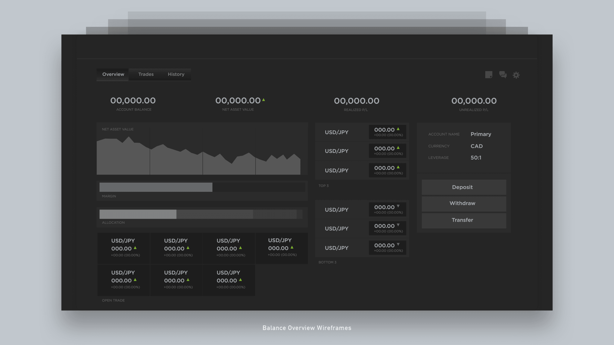
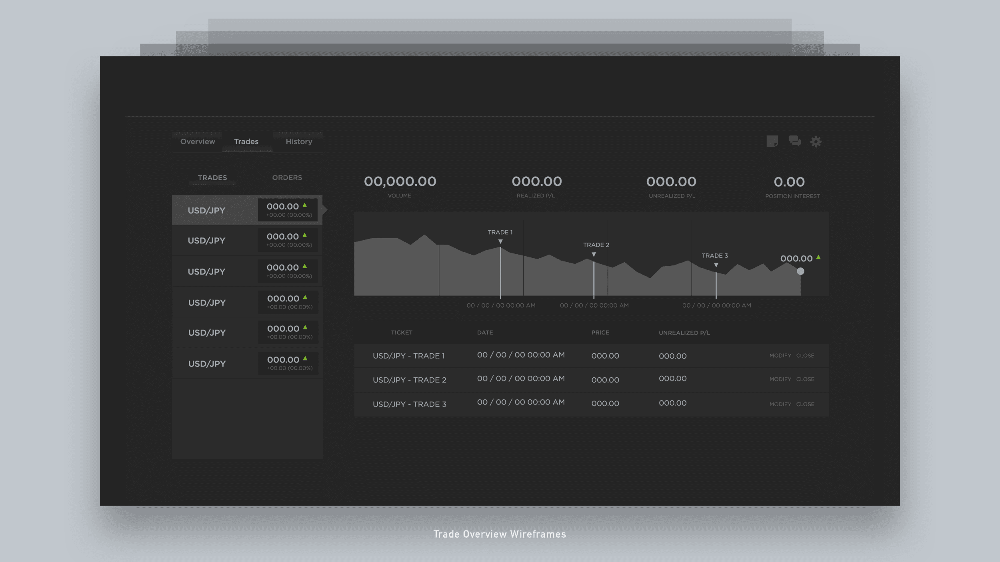
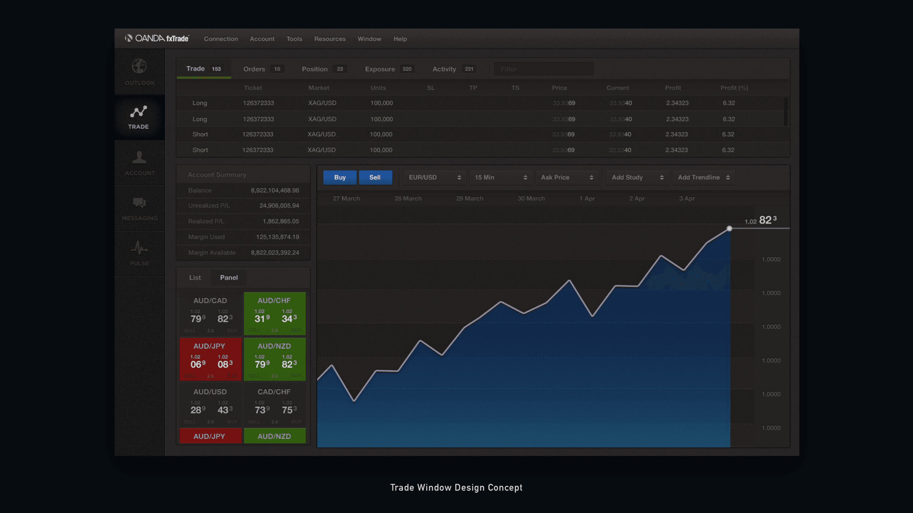
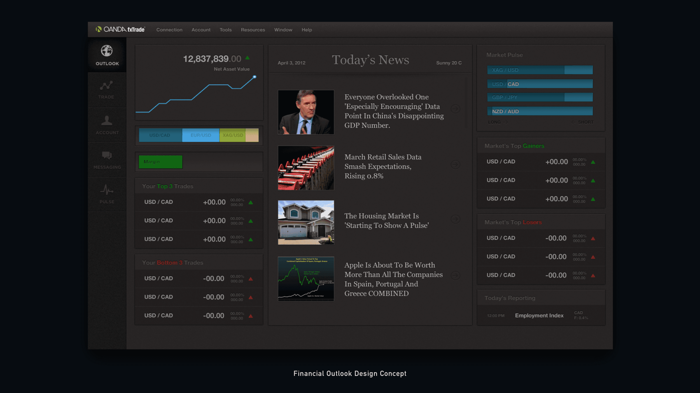
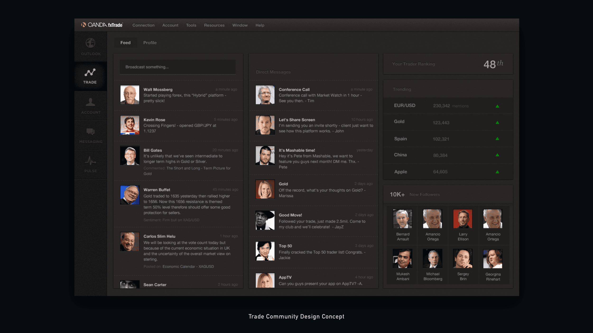
Behind the Scenes: Mobile
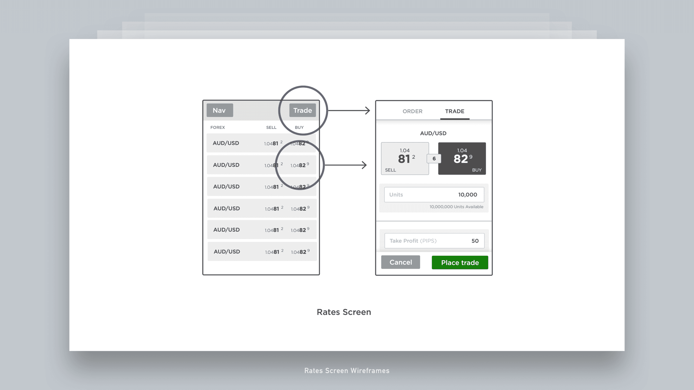
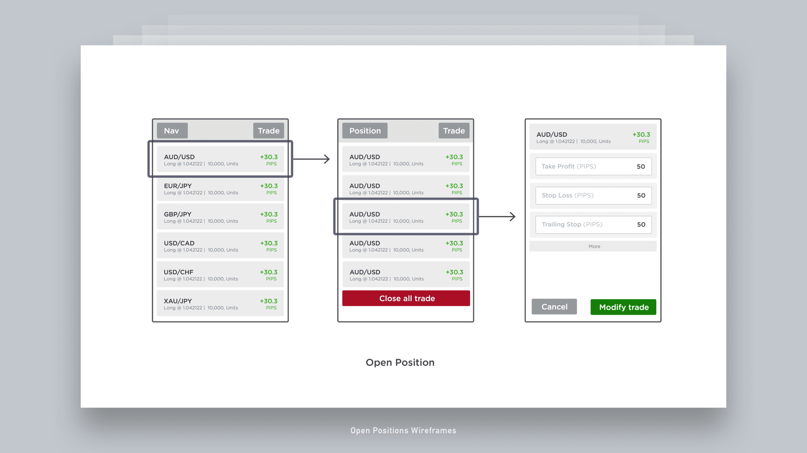
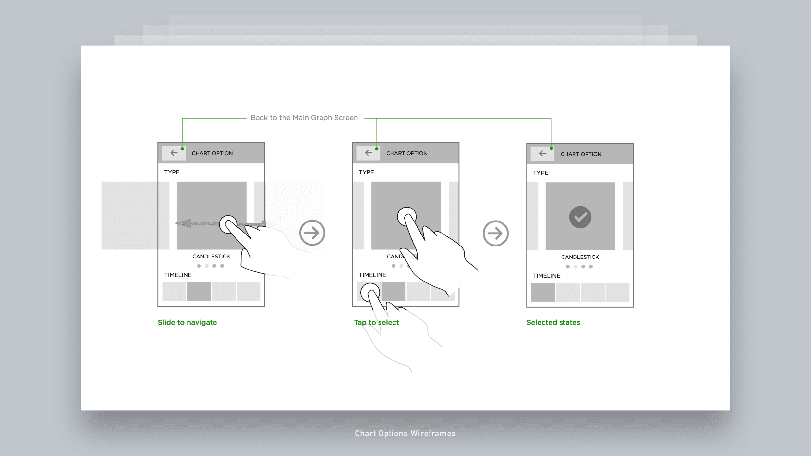
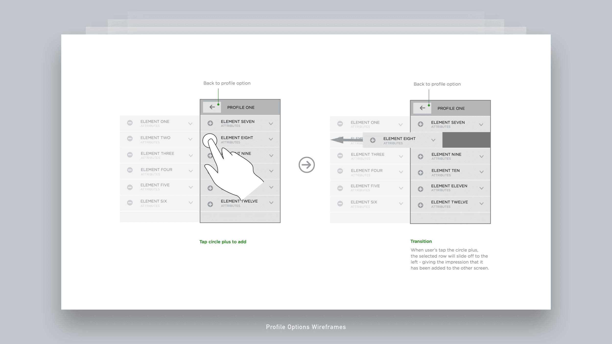
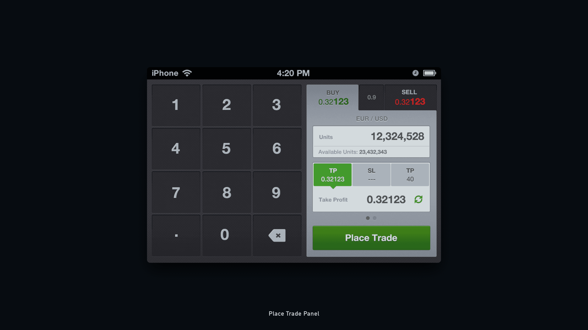
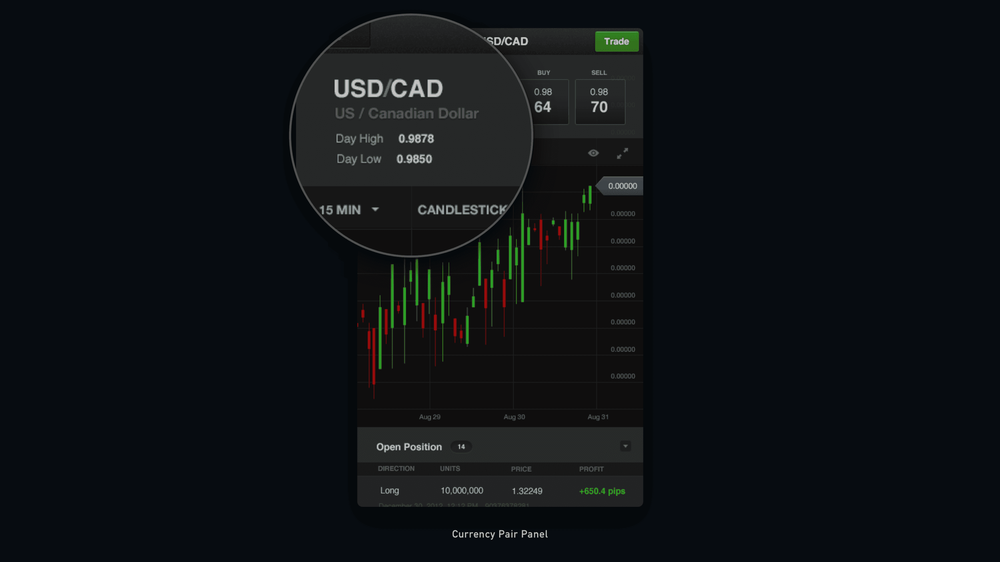
Final Designs
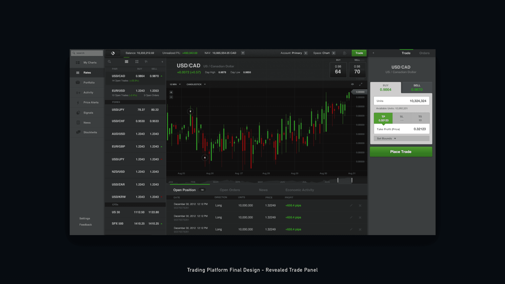
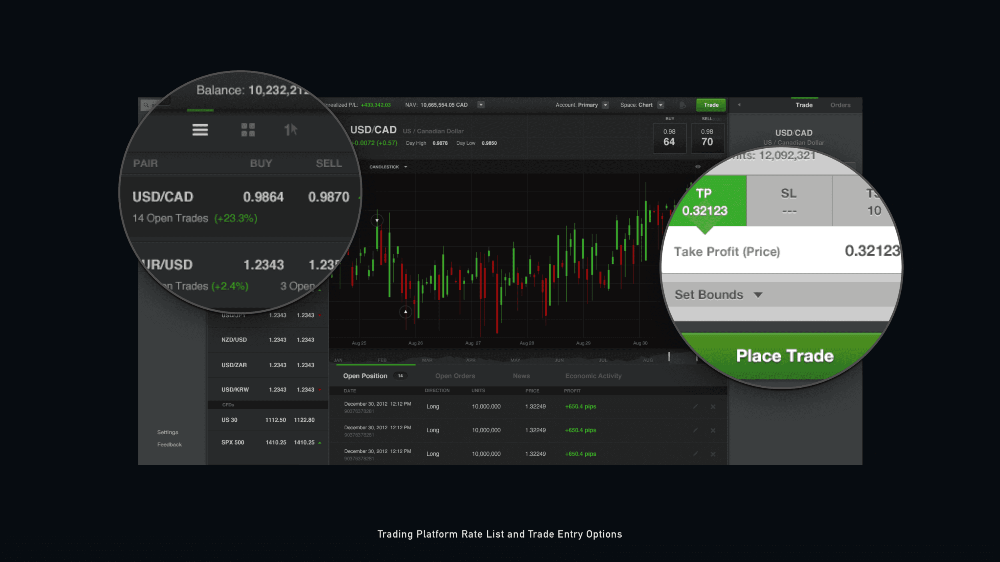
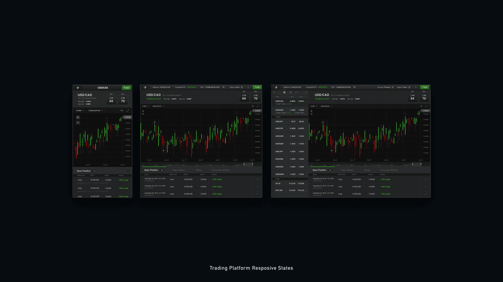